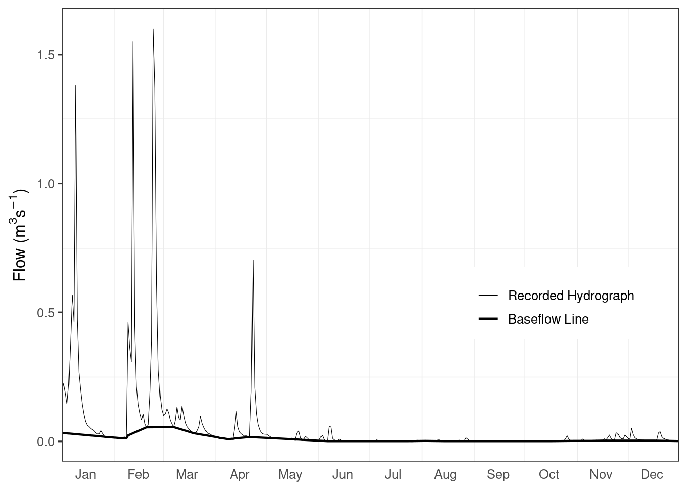

Three years of daily flow (1995 to 1997) from the Ray at Grendon Underwood (UK) have been selected. The base flow separation is done for the whole three-year period, whereas the BFI is calculated for the mid-year 1996. This ensures that days at the start and end of the calculation year are included. In Table 5.7 the calculation steps are illustrated using data from the beginning of the record.
library(tidyverse)
library(lubridate)
library(hydroDrought)
ray <- international %>%
filter(river == "Ray") %>%
select(data) %>%
unnest(data) %>%
mutate(
year = water_year(time)
) %>%
filter(year >= 1995, year <= 1997)The daily flows, \(Q\) m3s-1, are divided into non-overlapping blocks of five days (Column 1 and 2, Table 5.7).
ray <- ray %>%
mutate(
block = ((row_number() - 1) %/% 5) + 1
) %>%
print()## # A tibble: 1,096 x 4
## time discharge year block
## <date> <dbl> <dbl> <dbl>
## 1 1995-01-01 0.109 1995 1
## 2 1995-01-02 0.063 1995 1
## 3 1995-01-03 0.043 1995 1
## 4 1995-01-04 0.039 1995 1
## 5 1995-01-05 0.229 1995 1
## 6 1995-01-06 0.186 1995 2
## 7 1995-01-07 0.116 1995 2
## 8 1995-01-08 0.111 1995 2
## 9 1995-01-09 0.095 1995 2
## 10 1995-01-10 0.123 1995 2
## # … with 1,086 more rowsMark the minima of each of these blocks and let them be called \(Q_{min_1}\), … \(Q_{min_n}\) (Column 3, Table 5.7). Consider in turn (\(Q_{min_1}\), \(Q_{min_2}\), \(Q_{min_3}\)), … (\(Q_{min_{n-1}}\), \(Q_{min_{n}}\), \(Q_{min_{n+1}}\)). In each case, if 0.9·central value ≤ outer values, then the central value is identified as a turning point for the base flow line (bold lines in Table 5.7). Continue this procedure until the whole time series has been analysed.
points <- ray %>%
group_by(block) %>%
slice_min(discharge, with_ties = FALSE) %>%
ungroup() %>%
rename(Qmin = discharge) %>%
mutate(
Qmin.red = 0.9 * Qmin,
is.turning.point = Qmin.red <= lag(Qmin) & Qmin.red <= lead(Qmin)
)Join the turning points by straight lines to form the base flow separation line and assign to each day a base flow value \(Q_b\), by linear interpolation between the turning points. If, on any day, the base flow estimated by this line exceeds the total flow, the base flow is set to be equal to the total flow \(Q\), on that day.
tp <- points %>%
filter(is.turning.point) %>%
select(time, Qmin)
baseflow <- ray %>%
mutate(
baseflow = approx(x = tp$time, y = tp$Qmin, xout = time)$y,
baseflow = pmin(baseflow, discharge)
)Calculate the volume of water (\(V_{base}\)) beneath the base flow hydrograph between the first and last date of interest. The volume (m3) is simply derived as the sum of the daily base flow values multiplied by 86 400 (the number of seconds per day).
Calculate the corresponding volume of water beneath the recorded hydrograph (\(V_{total}\)). The volume (m3) is obtained by summing the daily flow values between the first and the last dates inclusive.
volume <- baseflow %>%
filter(year == 1996) %>%
na.omit() %>%
summarise(
total = sum(discharge) * 86400,
baseflow = sum(baseflow) * 86400
)The BFI is then \(V_{base}/V_{total}\).
bfi <- volume$baseflow / volume$total
bfi## [1] 0.2024139Table 5.7 Calculation of the base flow separation line from time series of daily flow; non-overlapping 5-day blocks are indicated by alternating background colors and turning points are marked bold.
| 1 . Date | 2 . Daily flow | 3 . Qmin | 4 . 0.9 * Qmin | 5 . Base flow |
|---|---|---|---|---|
| 1995-01-01 | 0.109 | |||
| 1995-01-02 | 0.063 | |||
| 1995-01-03 | 0.043 | |||
| 1995-01-04 | 0.039 | 0.039 | 0.0351 | |
| 1995-01-05 | 0.229 | |||
| 1995-01-06 | 0.186 | |||
| 1995-01-07 | 0.116 | |||
| 1995-01-08 | 0.111 | |||
| 1995-01-09 | 0.095 | 0.095 | 0.0855 | |
| 1995-01-10 | 0.123 | |||
| 1995-01-11 | 0.178 | |||
| 1995-01-12 | 0.091 | |||
| 1995-01-13 | 0.076 | |||
| 1995-01-14 | 0.073 | |||
| 1995-01-15 | 0.062 | 0.062 | 0.0558 | |
| 1995-01-16 | 0.054 | 0.054 | 0.0486 | 0.054 |
| 1995-01-17 | 1.060 | 0.056 | ||
| 1995-01-18 | 0.856 | 0.058 | ||
| 1995-01-19 | 1.050 | 0.060 | ||
| 1995-01-20 | 1.340 | 0.062 | ||
| 1995-01-21 | 1.640 | 0.064 | ||
| 1995-01-22 | 1.350 | 0.067 | ||
| 1995-01-23 | 0.559 | 0.069 | ||
| 1995-01-24 | 0.255 | 0.255 | 0.2295 | 0.071 |
| 1995-01-25 | 0.644 | 0.073 | ||
| 1995-01-26 | 0.793 | 0.075 | ||
| 1995-01-27 | 0.896 | 0.077 | ||
| 1995-01-28 | 0.631 | 0.079 | ||
| 1995-01-29 | 1.000 | 0.081 | ||
| 1995-01-30 | 0.492 | 0.492 | 0.4428 | 0.083 |
| 1995-01-31 | 0.377 | 0.085 | ||
| 1995-02-01 | 1.670 | 0.087 | ||
| 1995-02-02 | 0.448 | 0.090 | ||
| 1995-02-03 | 0.237 | 0.092 | ||
| 1995-02-04 | 0.163 | 0.163 | 0.1467 | 0.094 |
| 1995-02-05 | 0.123 | 0.096 | ||
| 1995-02-06 | 0.102 | 0.098 | ||
| 1995-02-07 | 0.100 | 0.100 | 0.0900 | 0.100 |
| 1995-02-08 | 0.151 | 0.107 | ||
| 1995-02-09 | 0.178 | 0.115 |
The first and second turning points are found on day 1995-01-16 and day 1995-01-16 (Column 4, Table 5.7), respectively, and a linear interpolation is used to estimate the base flow at time steps (days) between these dates (Column 5, Table 5.7). The daily base flow separation line is subsequently calculated for the whole period by linear interpolation between all turning points.
The volume beneath the base flow line, \(V_{base}\), for 1996 is found to be 348 494.5 m3, whereas the volume of the total flow, \(V_{total}\), is 1 721 693 m3. The resultant BFI is 0.20. The base flow separation line for River Ray in 1996 is shown in Figure 5.4 of the book.
The base flow for a given time series can also be calculated directly using the function baseflow(), optionally with a different choice of the block length (\(N = x\) days) or the turning point factor or parameter (\(TP\)) for the central value. The default values are tp.factor = 0.9 and block.len = 5, which can be adopted to the type of flow regime studied and changed accordingly by the user.
bf <- ray %>%
select(time, discharge) %>%
mutate(
baseflow = baseflow(discharge, tp.factor = 0.9, block.len = 5)
) %>%
filter(year(time) == 1996) %>%
print()## # A tibble: 366 x 3
## time discharge baseflow
## <date> <dbl> <dbl>
## 1 1996-01-01 0.19 0.0332
## 2 1996-01-02 0.224 0.0326
## 3 1996-01-03 0.189 0.0320
## 4 1996-01-04 0.145 0.0314
## 5 1996-01-05 0.221 0.0308
## 6 1996-01-06 0.385 0.0302
## 7 1996-01-07 0.567 0.0296
## 8 1996-01-08 0.463 0.0291
## 9 1996-01-09 1.38 0.0285
## 10 1996-01-10 0.475 0.0279
## # … with 356 more rowsFigure 5.4 Annual recorded hydrograph and calculated continuous base flow line for UK river Ray in year 1996 based on the BFI separation procedure (Worked Example 5.3).
